The principle of radial basis functions derives from the theory of functional approximation. Given N pairs (
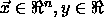
) we are looking for a function f of the form:
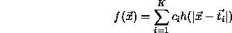
h is the radial basis function and  are the K
centers which have to be selected. The coefficients
are the K
centers which have to be selected. The coefficients  are also
unknown at the moment and have to be computed.
are also
unknown at the moment and have to be computed.
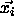
and are elements of an n--dimensional vector space.
are elements of an n--dimensional vector space.
h is applied to the Euclidian distance between each center
 and the given argument
and the given argument  . Usually a function h
which has its maximum at a distance of zero is used, most often the
Gaussian function. In this case, values of
. Usually a function h
which has its maximum at a distance of zero is used, most often the
Gaussian function. In this case, values of  which are equal
to a center
which are equal
to a center
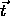
yield an output value of 1.0 for the function h, while the output becomes almost zero for larger distances.The function f should be an approximation of the N given pairs
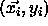
and should therefore minimize the following error function H:
The first part of the definition of H (the sum) is the condition which minimizes the total error of the approximation, i.e. which constrains f to approximate the N given points. The second part of H (
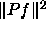
) is a stabilizer which forces f to become as smooth as possible. The factor determines the influence of
the stabilizer.
determines the influence of
the stabilizer.
Under certain conditions it is possible to show that a set of coefficients can be calculated so that H becomes minimal. This calculation depends on the centers which have to be chosen beforehand.
Introducing the following vectors and matrices
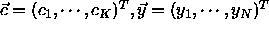
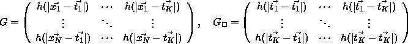
the set of unknown parameters  can be calculated by the formula:
can be calculated by the formula:
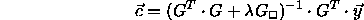
By setting  to 0 this formula becomes identical to the
computation of the Moore Penrose inverse matrix, which gives the best
solution of an under-determined system of linear equations. In this
case, the linear system is exactly the one which follows directly from
the conditions of an exact interpolation of the given problem:
to 0 this formula becomes identical to the
computation of the Moore Penrose inverse matrix, which gives the best
solution of an under-determined system of linear equations. In this
case, the linear system is exactly the one which follows directly from
the conditions of an exact interpolation of the given problem:
The method of radial basis functions can easily be represented by a
three layer feedforward neural network. The input layer consists of n
units which represent the elements of the vector  . The K
components of the sum in the definition of f are represented by the
units of the hidden layer. The links between input and hidden layer
contain the elements of the vectors
. The K
components of the sum in the definition of f are represented by the
units of the hidden layer. The links between input and hidden layer
contain the elements of the vectors  . The hidden units
compute the Euclidian distance between the input pattern and the
vector which is represented by the links leading to this unit. The
activation of the hidden units is computed by applying the Euclidian
distance to the function h. Figure
. The hidden units
compute the Euclidian distance between the input pattern and the
vector which is represented by the links leading to this unit. The
activation of the hidden units is computed by applying the Euclidian
distance to the function h. Figure  shows the
architecture of the special form of hidden units.
shows the
architecture of the special form of hidden units.
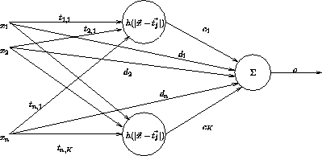
The single output neuron gets its input from all hidden neurons. The links leading to the output neuron hold the coefficients . The activation of the output neuron is determined by the weighted sum of its inputs.
The previously described architecture of a neural net, which realizes an approximation using radial basis functions, can easily be expanded with some useful features: More than one output neuron is possible which allows the approximation of several functions f around the same set of centers . The activation of the output units can be calculated by using a nonlinear invertible function (e.g.\ sigmoid). The bias of the output neurons and a direct connection between input and hidden layer (shortcut connections) can be used to improve the approximation quality. The bias of the hidden units can be used to modify the characteristics of the function h. All in all a neural network is able to represent the following set of approximations:
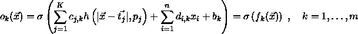
This formula describes the behavior of a fully connected feedforward net with n input, K hidden and m output neurons.
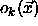
is the activation of output neuron k on the input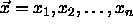
to the input units. The coefficients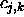
represent the links between hidden and output layer. The shortcut connections from input to output are realized by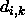
. is
the bias of the output units and
is
the bias of the output units and 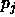
is the bias of the hidden neurons which determines the exact characteristics of the function h. The activation function of the output neurons is represented by .
.
The big advantage of the method of radial basis functions is the possibility of a direct computation of the coefficients
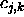
(i.e. the links between hidden and output layer) and the bias . This computation requires a suitable choice of centers (i.e. the links between input and hidden layer). Because of the lack
of knowledge about the quality of the
(i.e. the links between input and hidden layer). Because of the lack
of knowledge about the quality of the  , it is recommended
to append some cycles of network training after the direct computation
of the weights. Since the weights of the links leading from the input
to the output layer can also not be computed directly, there must be a
special training procedure for neural networks that uses radial basis
functions.
, it is recommended
to append some cycles of network training after the direct computation
of the weights. Since the weights of the links leading from the input
to the output layer can also not be computed directly, there must be a
special training procedure for neural networks that uses radial basis
functions.
The implemented training procedure tries to minimize the error E by using gradient descent. It is recommended to use different learning rates for different groups of trainable parameters. The following set of formulas contains all information needed by the training procedure:
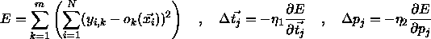
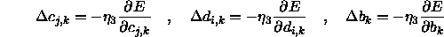
It is often helpful to use a momentum term. This term increases the
learning rate in smooth error planes and decreases it in rough error
planes. The next formula describes the effect of a momentum term on
the training of a general parameter g depending on the additional
parameter  .
.
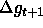
is the change of g during the time step t+1 while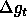
is the change during time step t:
Another useful improvement of the training procedure is the definition of a maximum allowed error inside the output neurons. This prevents the network from getting overtrained, since errors that are smaller than the predefined value are treated as zero. This in turn prevents the corresponding links from being changed.